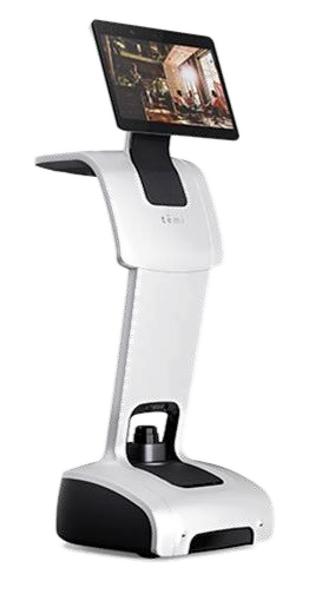
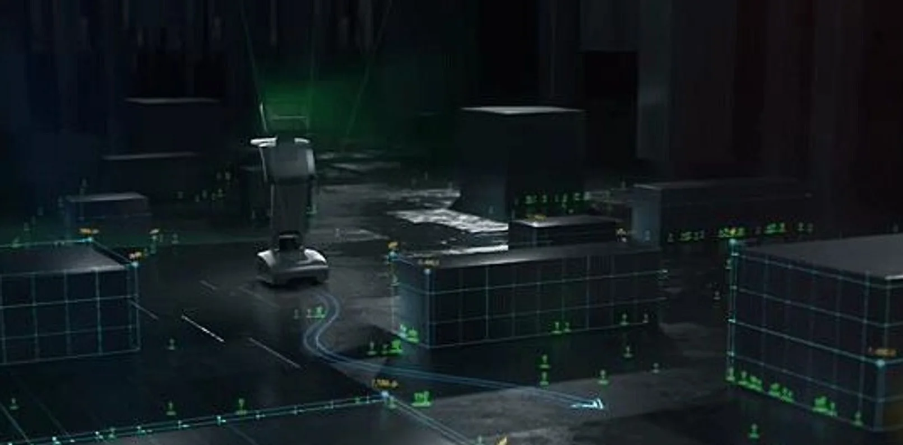
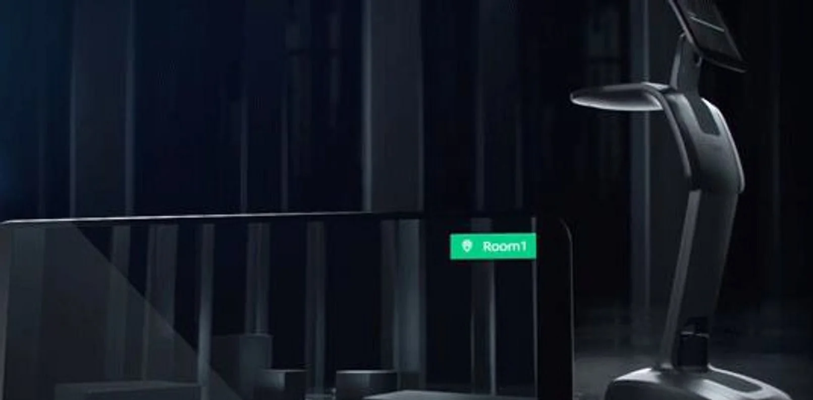
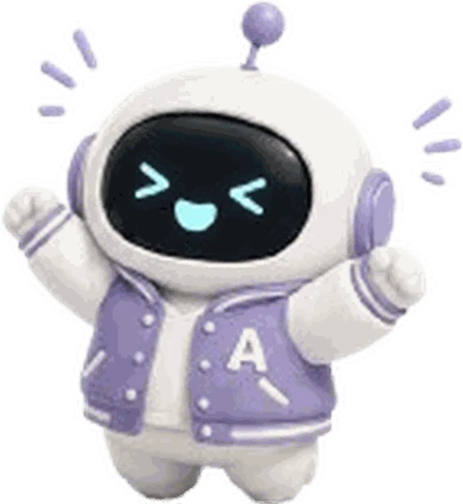
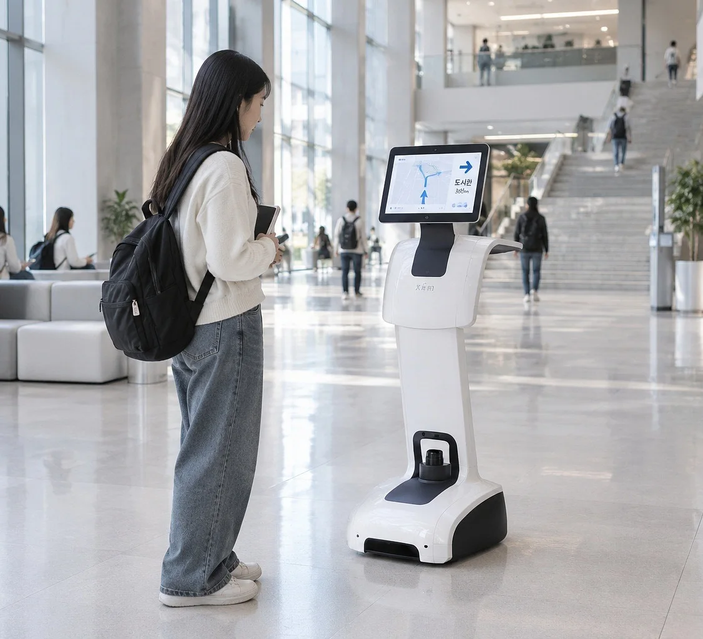
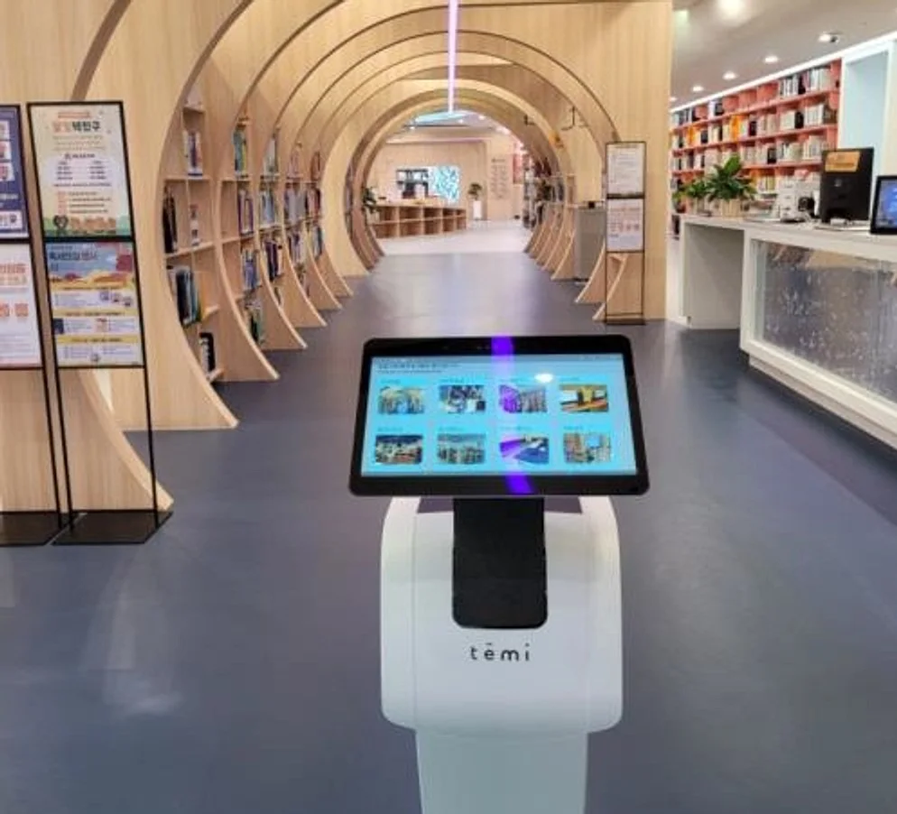
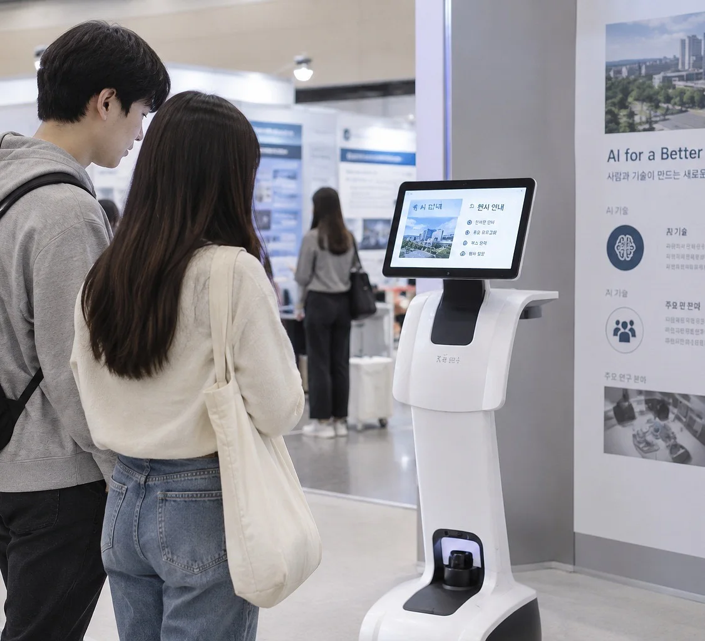
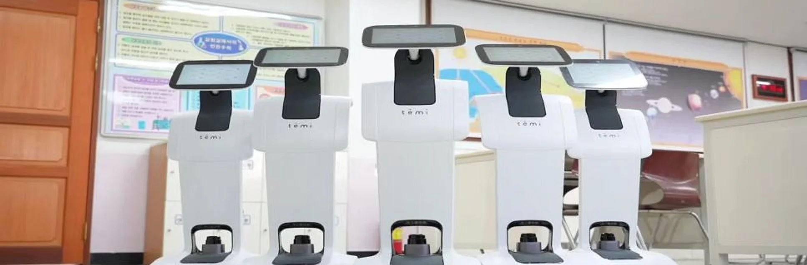

기존 SW·AI 교육
화면 안에서 끝나는 실습결과물이 화면 속 코드에 머묾이론 중심 수업, 약한 성취감예상치 못한 변수 없는 환경
UNIVERSITY / EDUCATION PROPOSAL
TEMI로 시작하는 대학 AI·로봇 실습 교육
공간에서 움직이고 대화하는 로봇 서비스를 학생이 직접 만드는 실습 모델

대부분의 SW·AI 교육은 화면 안에서 끝납니다. 산업 현장은 실제 공간에서 이동하고, 사람과 대화하며, 예상치 못한 변수에 반응하는 서비스를 요구합니다.
이제 필요한 것은 더 많은 이론이 아니라, ‘실제 공간에서 작동하는 경험’입니다.
라이다·센서 기반 실내 매핑 및 목적지 이동
자연어 요청 인식과 음성 응대(TTS/STT)
대형 디스플레이 기반 안내·콘텐츠 표출
Android 기반 TEMI SDK로 자유로운 앱 개발


광운대학교 인공지능융합대학 정보융합학부 도입 사례
AI·소프트웨어 이론 교육을 넘어, 학생이 직접 개발한 결과물이 실제 공간에서 작동하는 경험을 제공할 실습 기자재가 필요했습니다.
공간 매핑, 목적지 설정 등 TEMI의 기본 동작 원리 학습
Android·TEMI SDK로 이동·음성·화면 제어 실습
학생 팀 단위로 서비스 시나리오를 설계·구현하고 발표
높은 호응을 이끌어낸
실습형 로봇 수업

전공 실습·융합 수업·캡스톤디자인 등 교과목 목표와 학생 수준에 맞춰 구성합니다.
서비스 기획, 공간 인식, 매핑·목적지 설정
Android·TEMI SDK, 이동·음성·화면 제어
음성 인터페이스, 요청 해석과 로봇 동작 연결
안내·응대 시나리오와 기능 통합 구현
과업 수행 관찰, HCI·UX 평가와 최종 시연
약 45시수(주 3시수) 편성 예시 — 수업 목표·선수지식에 따라 조정 가능
※ 시수는 편성 예시이며 실제 학점·수업 시간은 대학 운영 기준에 따릅니다.

시설 질의응답과 목적지 안내를 수행하는 안내 서비스

도서 정보 조회와 서가 위치를 안내하는 도우미 서비스

주제별 설명과 동선을 안내하는 큐레이션 서비스
학생 1인 1대가 아닌, 학과 실습실에 3대를 공용 배치해 팀 단위로 순환 실습하는 방식을 제안합니다.

1인 1대 대비 초기 도입 예산 절감
팀 프로젝트 중심 수업(캡스톤 등)과 운영 방식이 자연스럽게 일치
실습실 공용 자원으로 관리·유지보수 부담 최소화
CLOSING · 문의 안내
학과 · 수강 규모 · 활용 목적에 따른 로봇 구성 및 제공 자료 범위를 함께 협의합니다.
문의 방법
아래 이메일 또는 전화로 문의해 주세요. 위 협의 항목을 함께 적어 주시면 상담이 더 빠르게 진행됩니다.